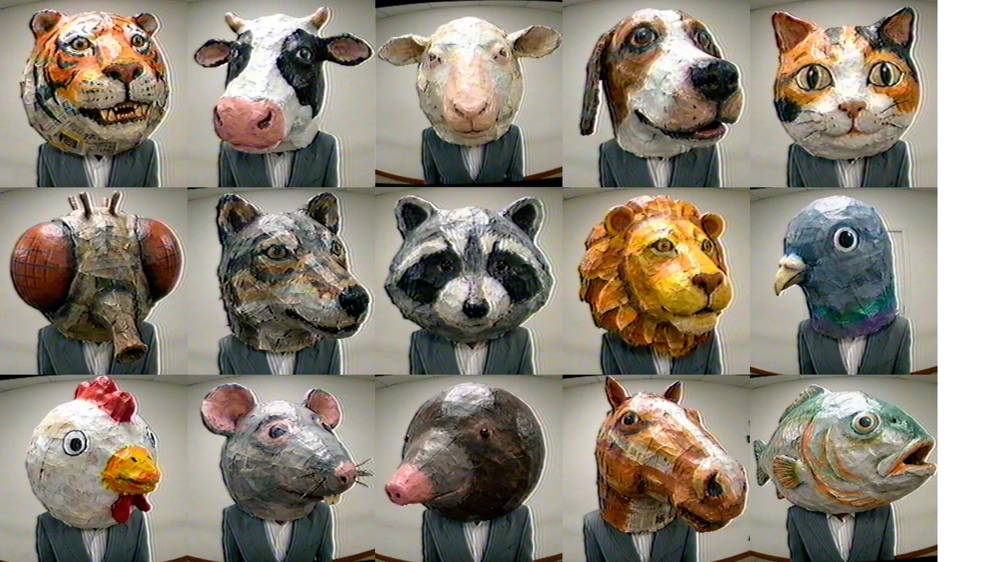

记忆之窗 · «Окно в память»
莫斯科 · ZIL文化中心 · 2026年11月4日至15日
视频作品《在信息流中》的作者。
《记忆之窗》是在莫斯科ZIL文化中心举办的七位数字艺术家的群展。展览聚焦伴随日常生活数字化而成长的一代，以及我们借以认识世界的媒介设备。
在筹备阶段，艺术家们通过随机分配获得不同的媒介：幻灯机、旧电视、智能手机等技术影响着作品的形式。设备本身也因此成为表达的一部分。
《在信息流中》
图像与频道不断更替，但在表面的多样性之下，同样的重复越来越清晰。外壳改变，色彩增多，你继续把这一切装进脑中，直到某一刻……砰！系统出了故障。
于是，你暂时退出信息流，回过神来，慢慢恢复。但渐渐地，你忘记了这股信息流曾把自己推向何处，又亲手将自己送回其中。
在ZIL文化中心的展出
创作素材
